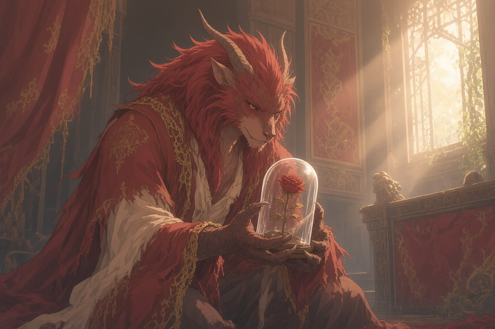
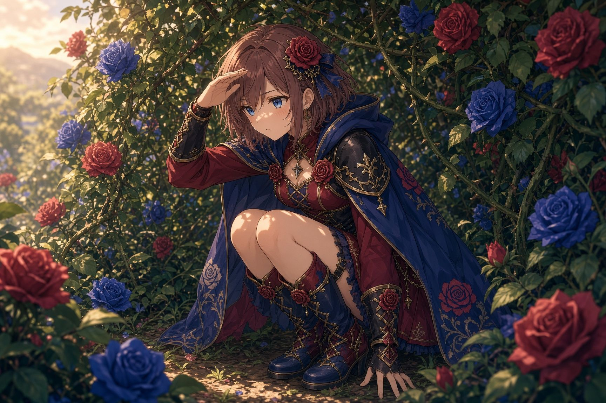

Once, in a green country where the roads ran between hedges and the hedges ran wild with roses, a king and queen were given a daughter, and they named her Briar Rose.
They held a great feast for her christening. They invited every lord and lady in the land, and the three good fairies who watched over the kingdom, and for the fairies they set the high table with three golden plates. There was a fourth fairy in that country. Nobody set a plate for her. Nobody even said her name.
The first good fairy bent over the cradle and gave the princess beauty. The second gave her a voice like a lark at morning. The third was just stooping to give her own gift when every candle in the hall leaned sideways at once, as if a great wind had blown through. There was no wind.
She had come in without opening the doors.
Even now, when they must speak of her at all, they call her the Dark One, and they say it quietly, and never after sundown. She was the most beautiful thing anyone in that hall had ever seen, and every one of them wanted to look away and could not: skin pale as a winter moon, hair black and drifting as if she stood underwater, and eyes as blue as the hottest part of a flame. Her gown was woven of thorns and night. The milk soured in the nurse’s jug. The roses on the tables closed up tight.
She walked to the high table and ran one long black nail along the edge of the third golden plate.
“Three plates,” she said. Her voice was honey poured over broken glass. “How lovely. Someone must have miscounted.”
The king rose. “You were not invited.”
“No,” said the Dark One. “I noticed.”
“Please,” said the queen, and she gathered the baby up against her chest. “She is only a child. She has done nothing to you.”
“Nor have I done anything to her,” said the Dark One. “Yet. And I have brought a gift, as is proper. I would never be rude at a christening.” She smiled down at the child the way a cat smiles at a bird that has not yet learned to fly. “Before her sixteenth year is done, she will prick her finger on a spindle, and she will die.”
The hall went silent. Somewhere a goblet tipped over, and the wine ran across the white cloth like blood.
The third good fairy stepped forward. She was small and gray and trembling, but she stepped forward. “I cannot undo what you have done,” she said. “But I have not yet given my gift. She will not die. She will only sleep, and the kingdom with her, until one who truly loves her comes to wake her.”
The Dark One turned her head and looked at the little gray fairy for a long moment. The little gray fairy did not look away, though her hands shook.
“Sleep,” the Dark One said at last, as if tasting the word. “Very well. Sleep is so much more interesting than death. Death ends things.” She laughed, low and delighted. “Thank you, sister. You have made it better.”
And she was gone, and the candles stood up straight again, and the roses on the tables slowly opened.
The king and queen could not undo the curse. But they could keep their daughter from ever being hurt, and they set out to do exactly that.
They burned every spindle in the kingdom. Then, because a spindle was not the only sharp thing in the world, they did not stop there. The knives at the princess’s table were rounded. The corners of her rooms were padded. The minstrels were forbidden to sing her sad songs, and the nurses were forbidden to tell her sad stories, and every morning before she woke, the gardeners cut every thorn from every rose. One stair in the castle, the one that wound up to the highest tower, was locked, and she was told never to climb it, and she never did.
So Briar Rose grew up beautiful and bright and gentle, the way a flower grows under glass. She had never been refused. She had never been frightened. She had never once been hurt, and so she had never once learned how to bear it.
Her parents chose her company as carefully as they chose everything else, and the company they chose was Prince Lucien.
He was the son of the neighboring king, a quiet boy with careful hands. He agreed with every rule. He never dared her to do anything. He walked beside her through the padded halls and the thornless gardens and was exactly as safe as everything else, and the king and queen loved him for it.
Lucien loved Briar Rose. He could not have said when it began. It seemed to him he had always loved her, the way he had always had hands.
But Lucien wanted many things, and he did not know which of them was king. He wanted Briar Rose. He wanted to be thought good. He wanted never to be refused. All of these sat in his heart like courtiers in an empty throne room, each one whispering, none of them crowned. And so when one desire pulled him forward, another held him back, and Lucien stood still and called it patience.
He never told her. Instead, every morning, he rose before the sun and walked the long hedge until he found the best rose on it, the reddest, the one with the dew still standing in its heart. He cut it, and then, one by one, he stripped away every thorn. He laid it on her windowsill and left no name. Briar Rose loved the roses and wondered who sent them. She never guessed it was the boy beside her. He had become so much a part of the walls that she had stopped seeing him at all.
Lucien had a brother, once.
Not by blood. Florimund was the son of a knight who had died in Lucien’s father’s service, and the two boys were raised together, and at seven years old they swore brotherhood with a cut thumb each, pressed together, blood to blood. They never unswore it. Florimund was bold and loud and lucky. He climbed what he was told not to climb and laughed when he fell. When he was ten, the king and queen across the hedge decided he was far too wild to be anywhere near their daughter, and he was sent away to the wars over the sea to learn to be a knight.
He came home in the spring of Briar Rose’s sixteenth year, brown from foreign suns, with a scar through one eyebrow and a hundred stories. The first thing he did was crawl through a gap in the hedge that Lucien had shown him when they were boys, and had never once used himself. On the other side, in a garden with no thorns, he found a princess sitting alone.

He did not know who she was. He did not know any of the rules. He talked to her as if she were a person and not a glass ornament. And when he left, he gave her a rose he had picked on his way through the hedge, a wild red one, with all of its thorns still on.
She closed her hand around it and pricked her finger.
A single bead of blood welled up, bright as a berry. It was the first time in her life that anything had ever hurt her. Briar Rose stared at it. And then, to Florimund’s astonishment, she laughed, because the pain was so sharp and so small and so real, and nothing had ever been real before.
Somewhere far off, past the place where the roses grow black, someone else laughed too.
After that, Florimund came through the hedge every day. Briar Rose fell in love with him the way someone falls who has never once fallen: all at once, all the way, with nothing to catch her. And because her father had promised her to a prince in a far country, they made a plan. On the night of her sixteenth birthday, while the whole castle was drunk and dancing, Florimund would wait with two horses, and by morning they would be over the border, and no one would ever keep her anywhere again.
Florimund could not come into the castle. So he wrote down the hour and the place, and he gave the letter to the one person he trusted to carry it.
He gave it to his brother.
This was the first time Lucien might have done right. He might have carried the letter. He might have torn it up in front of Florimund and said he would not. He might even have gone to Briar Rose and told her that he loved her. Any of these would have been a choice.
Lucien did none of them. He put the letter in his coat, and he kept it there.
And that night, he walked out alone past the end of the hedge, onto the path every child in that country is told never to take. Mothers there teach their children three things before they teach them their prayers: do not lie, do not steal, and do not follow the black roses. The path runs longer than it should. The thorns grow long as knives and lean in close to listen. At the end of it, in a clearing where no bird has ever sung, there is a house behind a fence of bones. On every post of the fence there is a skull, and in every skull there is a candle, and every candle turned to watch him come.
She was waiting for him on the step, as if she had been waiting for years. She was more beautiful than Briar Rose. That was the first terrible thing. The second was that the longer Lucien looked at her, the more he felt something being taken out of him to pay for the looking. The third was that he did not look away.
“Well, little prince,” said the Dark One. “Did you come of your own will, or were you sent?”
“My own,” said Lucien.
“Good.” She showed him all her teeth. “Then there is no one else to blame. What do you want?”
Lucien wanted so many things. But he chose the smallest, safest one, because it seemed the least like asking. It was what everyone around Briar Rose had always wanted for her.
“Let her never leave,” he said.
The Dark One laughed, and every skull on the fence laughed with her.
“Granted,” she said. “And remember, little prince, that you asked.”
On the night of Briar Rose’s sixteenth birthday, the castle blazed with candles and the music never stopped.
Briar Rose did not dance. She sat at her window in her traveling cloak and waited for word. She waited while the candles burned down. She waited while the moon came up over the hedge and went down behind it. Out in the dark, Florimund stood holding two horses, and she did not come. And in a coat hanging on the back of a chair, a letter sat folded and unread.
Near midnight, Briar Rose understood that no one was coming for her.
She did not know what the feeling was. No one had ever taught her its name. It started somewhere under her ribs and spread until her hands shook and her eyes burned and she could not get enough air, and she thought, quite clearly, that she must be dying. Her parents had burned every spindle and stripped every thorn so that she would never be hurt. And so the first real sorrow of her life went through her like a sword through silk, because there was nothing in her that had ever learned how to stand against it.
She went out into the dark halls, away from the music. Her feet took her up, and up, to the one stair she had been told never to climb. The lock was open. At the top, under the door, there was a light.
Lucien saw that light from the courtyard below, a small steady glow in the highest window, gold as spun thread. He knew at once what it was. The letter was still in his coat.
This was the second time Lucien might have done right. He might have shouted. He might have run up the stairs. He might have put the letter in her hand.
Lucien stood in the courtyard with the music washing over him and watched the light, and did not move.
Briar Rose opened the door. There was an old woman at the wheel, spinning, and the thread ran gold between her fingers. Briar Rose could never have said what the old woman’s face looked like, only that she was smiling.
“What is that?” said the princess. Her voice was very small. She had never seen a spindle in her life.
“Something to help you sleep,” said the old woman. “Something to make it stop hurting.”
Briar Rose reached out.
The spindle pricked her finger, and she fell asleep.
And the whole kingdom fell asleep with her. The musicians slept with their bows on the strings. The cooks slept with their spoons in the pots. The king and queen slept on their thrones, and the dogs slept in the straw, and the candles burned down to nothing and slept in their own wax. And all around the castle the hedge began to grow, higher and thicker, thorns over thorns, until the towers vanished into a wall of briar and roses that no one could see through at all.
Only Lucien stayed awake. She saw to that.
Florimund saw the castle go silent and the thorns start to climb, and he drew his sword and cut.
He cut through the night and through the next day. His hands bled. His horses bolted. The hedge fought him at every step, but he cut his way through it, because he was Florimund, and he did not know how to stand still. He knew what the good fairy had promised: one who truly loves her will come to wake her. He had never been so sure of anything.
When at last he broke through into the courtyard, bleeding and torn, Lucien was waiting for him.
This was the third time Lucien might have done right. He might simply have stood aside.
But a heart with no king in it is ruled by whichever desire shouts loudest, and in that moment the loudest thing in Lucien was not love, and not honor, and not the blood he had pressed to his brother’s thumb when they were seven. It was the thought of Florimund climbing those stairs, and kissing her, and her waking, and her looking at Florimund the way she had never once looked at him.
Lucien drew his sword and barred the way.
They fought in the sleeping courtyard among the sleeping guards. Florimund fought to reach her. Lucien fought only so that no one would. Florimund was bolder, but he was exhausted and torn by thorns, and Lucien had always had careful hands. His blade went in under Florimund’s ribs.
Florimund looked at him. He did not look angry. He only looked surprised, the way a man looks when a step he has walked a thousand times is suddenly not there.
Then the thorns came for him. They curled up out of the stones and wound around him, gently, almost tenderly, and drew him down through the courtyard into the dark beneath the hedge, where the Dark One keeps the things she finds interesting. He did not die. Nothing in that place was ever allowed to finish.
She came walking out of the hedge, and the thorns bent out of her way like bowing courtiers. Up close she smelled of crushed roses and cold, turned earth. She looked at Lucien standing alone with the red sword in his hand, and her eyes were glad.
“Oathbreaker,” she said.
The word went into him the way his blade had gone into Florimund.
“You swore him your brother, blood to blood,” said the Dark One, “and now his blood is on your sword. Oh, I hear every oath that breaks in this country, little prince. Every one of them rings, like a struck glass. And yours rang so loudly.” She came closer. “A heart full of wants and not one of them on the throne. You never chose a single thing. You only let the strongest hunger have its way, and stood back, and called it patience. That is how a beast lives.”
She touched his face with one long, cold finger. Her nail was black, and sharp as a thorn.
“So be one.”
The change came over him like a fever. He grew, and grew, until his weight cracked the courtyard stones. Red fur ran over him like fire through dry grass, ruddy as rust, as autumn, as old blood. His careful hands split into great hooked claws. His jaw stretched into a long, proud muzzle full of teeth, horns curled back from his brow, and down his back rose a ridge of spines like a dragon’s. He was terrible, and he was magnificent, and he was a beast. When he cried out, it was a roar, and it shook the sleeping towers.
Then she reached into the hedge and drew out a single rose. It was the last rose Lucien had ever cut, the one he had meant to lay on Briar Rose’s windowsill the morning after her birthday, every thorn stripped away. It was still perfect. The dew still stood in its heart.
“Here is your curse,” she said, “and here is its measure. Each year that passes, this rose will drop one petal. When the last one falls, you will stay as you are, forever.”
Lucien, on his knees, found that he could still speak. “Is there no way out?”
She tilted her head like a crow before it strikes.
“There is one,” she said. “Only one. Your curse will break when one who has never heard your voice, nor known your name, loves you for what cannot be spoken.”
Lucien thought it was a riddle. He did not yet know that her curses are always, always honest.
The years began to fall from the rose, one petal at a time.
Lucien lived in his own castle on the near side of the hedge. Every day he climbed his tower and looked across the thorns at the place where Briar Rose was sleeping. Every night he stood over the rose and counted its petals.
On his knees in the courtyard, he had sworn to protect his Rose. He meant both of them: the one in his keeping that measured out what was left of him, and the one across the hedge who had never been his, and whom he could not let go.
But a promise to protect is not the same as the power to keep. Petals fell. Years passed. And when the rose was half bare, he went back down the path of black roses, past the fence of bones, where every candle turned in its skull to watch him come again. He was the first who had ever come twice.
“I cannot break the curse,” he said, “if I cannot touch my Rose.”
He meant the princess, whom he could not reach or wake or win, and could not stop wanting. He meant the rose, which he guarded so jealously he had never dared to hold it. He meant everything at once. He was still a man who could not choose.
The Dark One listened without blinking, and her eyes burned very bright.
“Then go and fetch me a piece of time,” she said. “And do not come back empty-handed, Oathbreaker. I eat the ones who come back empty-handed.”
Far to the north, past the Sleeping Wood, the Guild of Clockmakers keeps its workshops. Every clock in that country was made there, and every one of them keeps perfect time. But behind a high wall in the middle of their town, the Clockmakers were building something else: a clock made all of glass, so tall that its unfinished tower poked up above the rooftops like a broken tooth. Nobody outside the Guild knew what it was for. The townsfolk called it the Clockmakers’ Folly, and said the Guild had gone mad, and said it quietly, because the Clockmakers had long memories and very precise tempers.
The Folly was not finished, but it already ticked. At the very heart of it, where all its glass gears met, sat the escapement: the little glass heart that makes a clock tick, that lets time out one beat at a time and never any faster. It was the only piece the Clockmakers had ever gotten exactly right.
Lucien went there by night, on four feet. He climbed the half-built tower with his claws. He broke the glass with his teeth. He reached into the clock’s insides and tore out its little glass heart, still ticking, and carried it home in his mouth. Behind him, every clock in the town stopped at once, and then started again, wrong, and the bells of the Guild rang after him for a month. The Clockmakers have been searching for their stolen heart ever since. Their Folly still turns, after a fashion. But it cannot keep time the way it was meant to, and it never will.
The Dark One took the little glass heart and held it up to the moonlight. It ticked against her palm, small and frightened, and she smiled at it the way she had once smiled at a cradle.
“Since you cannot let go,” she said, “you may hold on. I will slow the world around your Rose until it barely moves. Your petals will fall so slowly that a hundred years will pass like a single summer. The princess will sleep and not age. You shall have what you cannot hold, Oathbreaker, at arm’s length, until time finally catches up with you.”
“And the price?” said Lucien. He had learned that much.
“Your voice,” said the Dark One. “And your name with it. I collect them.”
He did not hesitate. That was the worst of it. He had hesitated over everything in his life that mattered, and he did not hesitate over this.
So it was done. Time slowed over the Sleeping Dominion until a year passed over it like a single breath. Lucien’s voice went out of him like a candle, and with it went his name, for a name that cannot be spoken cannot be remembered. His servants, who had stayed with him through everything, were turned into the things they tended: a clock that walks but cannot chime, a candlestick that burns but cannot call, a chair that stands at his side and cannot say why. They love him still, as furniture loves a house. But not one of them remembers what to call him.
And so the Beast keeps his castle on the near side of the hedge.
The rose stands on a table in his highest room, so close to perfect that it seems not to have aged a day. He has never touched it. If he touches it, time will move, and a petal will fall.
Across the hedge, the princess sleeps in her tower, and he cannot go to her. He would not wake her if he could. She would not wake for him, and he has always known it. Two roses, one on either side of him, and neither of them within his reach.
They say he is waiting still. They say that on clear nights, a traveler near the Sleeping Wood can see a light in the Beast’s highest window, and a great red shape beside it that never moves, the way a man keeps watch beside someone who is dying.
And they say this, too, in that green country where the roads run between hedges: that a love which cannot let go is only a hedge of thorns. It grows and grows, and it keeps out everyone. It pricks the one who holds it most of all. And the one it holds, it destroys.